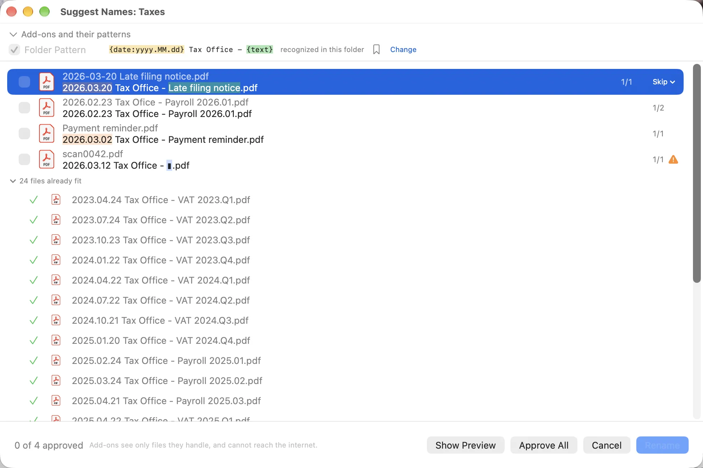
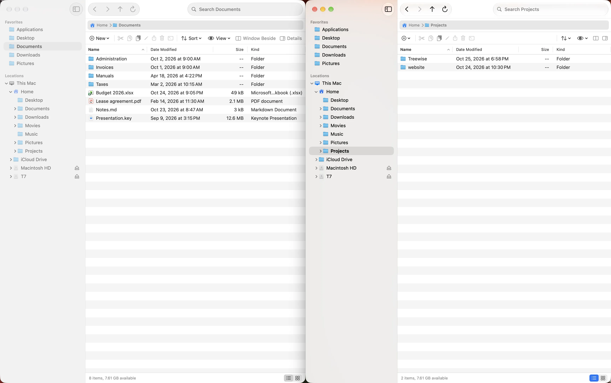

From Windows Explorer to the Mac.
Finder works differently from Explorer: no cut and paste for files, no folder tree to open to any depth, no two folders side by side. Treewise brings those back in a native Mac app, and adds a way to give files names that follow your own pattern. Here is what you did in Explorer, and how it goes in Treewise.
Explorer’s ways, and Treewise’s
| In Windows Explorer | In Treewise |
|---|---|
| Navigation pane, Quick access and This PC | The sidebar: Favorites, your disks and your home folder as a tree, open to any depth, and This Mac |
| Address bar, Ctrl+L or Alt+D | The address bar, with the path as buttons; ⌘L to type a path |
| Back and Forward, Alt+← Alt+→ | ⌘[ and ⌘], or the arrows in the toolbar |
| Up one folder, Alt+↑ | ⌘↑ |
| Cut, copy and paste, Ctrl+X C V | ⌘X, ⌘C and ⌘V: a cut file is dimmed until you paste it, and pasting moves it |
| Drag: same drive moves, other drive copies | The same, and the pointer shows which; ⌥ always copies, ⌘ always moves |
| Snap two windows side by side, Win+← → | Window Beside, ⌥⌘N: a second window on the same folder, the two on the halves of the screen |
| Tabs, Ctrl+T | ⌘T, the Mac’s own window tabs |
| New window, Ctrl+N | ⌘N |
| New folder, Ctrl+Shift+N | ⇧⌘N |
| Rename, F2 | Return, as everywhere on the Mac, or a click on the name of the selected item |
| Open, Enter | A double-click or ⌘↓ |
| Delete, to the Recycle Bin | ⌘⌫, to the Trash; Treewise always deletes through the Trash |
| Undo, Ctrl+Z | ⌘Z, for move, copy, rename, new folder and Move to Trash, in any window |
| Search, Ctrl+F | ⌘F searches the folder shown |
| Refresh, F5 | ⌘R |
| Preview pane and Details pane | The details pane, ⇧⌘P: a preview with the kind, size, date and folder; Space for Quick Look |
| View: large icons, details, hidden items, file name extensions | The View menu in the command bar: icons or list, row size, hidden files and file extensions |
| Sort by name, date, size or type | The Sort menu, or a click on a column’s header; folders stay on top |
| Open in Terminal from the menu | Open in Terminal, ⌃⌘T, in the terminal app you choose |
The keys
On a Mac, ⌘ (Command) does most of what Ctrl does on Windows, and ⌥ (Option) is the Alt key. ⌘⌫ is Command with the Delete key above Return.
And something Explorer does not have: names that follow your pattern
Folders of scans, invoices and photos end up with names like scan0001.pdf. Suggest Names, in a file’s or folder’s context menu, sees the pattern the other names in the folder already follow, such as 2026.03.14 Invoice - Acme, and proposes a name in that pattern for each file that does not fit, from its date and its current name. A name with a typo in it is offered written right. You approve each name before anything is renamed, and ⌘Z undoes it. It runs on your Mac, without the internet.

Two windows side by side
